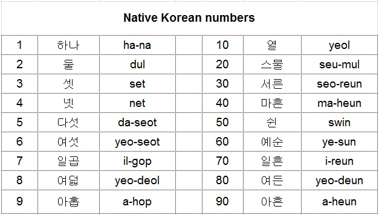
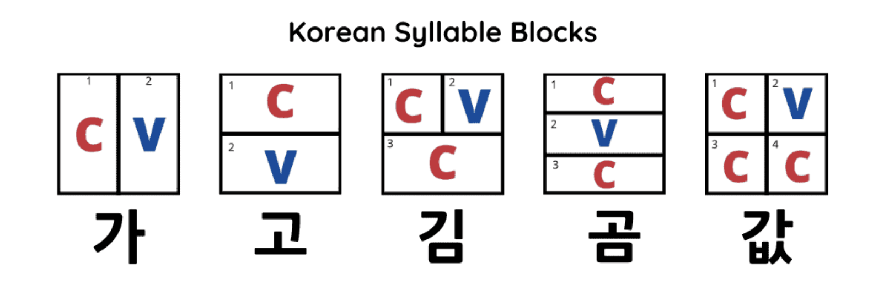

The Korean alphabet is known as Hangul(한글) and was invented by King Sejong the Great in 1443. Hangul consists of 40 letters: 21 vowels and 19 consonants. Additionally, Hangul vowels were developed according to Confucianism's three basic components of the universe: Heaven, Earth and Man. On the other hand, consonants were designed based on their pronunciations and articulation. For example, the character "ㅡ" represents the Earth and "ㅣ" represents Man. For consonants, "ㄴ" for example, represents the shape of the tongue when it is pronounced.
Below, you will find an image with all Hangul characters including their pronunciations. Click on the succeeding link to hear how Hangul is properly pronounced.
There are two numbering systems in Korean. Native-Korean numbers: used mostly for counting ages, people/animals/things, hours of the clock. Sino-Korean numbers are based on Chinese characters and can be used for a wide range of things like ages, dates, phone numbers, money, addresses, minutes and seconds (Native-Korean numbers are used for hours), and many more. Note that you do not have to learn Chinese characters for Sino-Korean numbers. You will only need to know to write them in Hangul. Even better, for Sino- Korean numbers, the key is to master numbers 0 -10. Once you have that mastered, the rest is easy! When dealing with Native-Korean numbers on the other hand, in addition to learning numbers 0-10, you will be required to learn double digit values such as 20, 30, 40, etc.
The pictures below will include a list of Native-Korean and Sino-Korean numbers, with their pronunciations.
Now that we have alphabets and numbers figured out, let's learn some popular vocabulary, shall we?
Popular vocabulary are what are considered necessary to grasp basic Korean conversations and are used in our everyday lives. These will range from greetings, transportation, and to short everyday phrases.
Note: This list is by no means exhaustive
| Word | Hangul | Romanization |
|---|---|---|
| Hello | 안녕하세요 | an-nyeong-ha-se-yo |
| Goodbye | 안녕히계세요 | an-nyeong-hi-gye-se-yo |
| Korea | 한국 | han-guk |
| Seoul | 서울 | seo-ul |
| Person | 사람 | sa-ram |
| Korean Person | 한국 사람 | han-guk-sa-ram |
| United States | 미국 | mi-guk |
| Country | 나라 | na-ra |
| Yes | 네 | ne |
| No | 아니 | a-ni |
| Thank You | 고마워요 | gam-sa-ham-mida |
| I'm Sorry | 미안해요 | mi-an-hae-yo |
| Age | 나이 | na-i |
| Job | 직업 | ji-geob |
| Car | 자동차 | ja-dong-cha |
| Train | 기차 | gi-cha |
| Student | 학생 | hak-saeng |
| Teacher | 선생님 | seon-saeng-nim |
| Friend | 친구 | chin-gu |
| Family | 가족 | ga-jok |
| What is Your Name? | 이름이 뭐예요? | i-reu-mi-mwo-ye-yo |
The first important thing to note when writing Hangul is that it is written in Syllable blocks:
As described in the image above, there are multiple syllable blocks in Korean. The 'C' denotes a consonant and the 'V', a vowel. Note that every syllable block must start with a consonant and never a vowel. For words starting with vowels, such as 어머니(Mother), 'ㅇ' is placed in the initial consonant position of the syllable block. Note that 'ㅇ' does not have the sound 'ng' here. It is merely a placeholder and is silent.
Koreans typically place a huge emphasis on being respectful to elders or knowing what to say/what not to say in formal gatherings. Because of this, in your path to becoming proficient in Korean, you will find that words might have multiple translations. Korean words have a honorific version and a regular version. Honorifics are used when speaking to people generally older than you like your grandparents, professors, at conferences, job interviews and others. Regular speech can be used with your friends, family members, people younger than you, etc
Additionally, there are special honorific titles for certain groups of people. If you're familiar with Korean dramas for example, you might have heard the phrases: "Oppa" (오빠), "Unni" (언니), "Ahjusshi" (아저씨). These words, meaning older brother, older sister, and middle-aged man, respectively, are only a few of the many honorific titles. When refering to your older brother, you would not want to refer to him as "Dongseng" (동생) which means younger brother. Also, a lot of these words are gender specific, when considering both the speaker and the person being referred to. A younger male referring to an older male friend or brother would say "Hyung" (형), while a younger feamle would say "Oppa".
Check out the table below to see regular words vs their honorifics. Also, be sure to check the link to learn about the common honorific titles.
| Word | Regular | Honorific |
|---|---|---|
| Thank You | 고마워요 | 감사합니다 |
| I'm Sorry | 미안해요 | 최송합니다 |
| Mother | 엄마 | 어머니 |
| Father | 아빠 | 아버지 |
| Birthday | 생일 | 생신 |
| Eat | 먹어요 | 드세요 |
| Sleep | 자요 | 주무세요 |
Tongue twisters are known to be used for fun but its uses are far beyond that. For language learners like you, tongue twisters are really important to improve in your language of choice. Tongue twisters are a great pronunciation drill. It will help you listen to your pronunciation and improve it.
Here are some tongue twisters to play with. These might be difficult at first but I have provided the romanization to makes things easier. See how many you can say correctly and fast. Enjoy!
1. 저분은 백 법학박사이고 이분은 박 법학박사이다 Romanization/Pronunciation: Jeobun-eun baeg beob-hag-bag-saigo ibun-eun bak beob-hag-bak-saida Translation: That is Mr. Baek, a doctor of law, and this is Mr. Park, also a doctor of law.As with most languages, there are certain areas that learners typically find more difficult to grasp. With Korean, pronunciation and writing proves to be the most common trouble areas.
Pronounciation seems to be a problem because certain words are not pronounced the way they are spelled and for some words, you must produce as aspirated sound or roll your tongue to pronounce them.
The table below provides a few examples of words spelt differently from how they are pronounced:
| Word | How they Should Be Pronounced | Correct Pronunciation |
|---|---|---|
| You: 네가 | ne-ga | ni-ga |
| Looks like: 것 같아요 | keos-ga-tayo | keo-ga-gatayo | Tasteless: 맛 없어요 | mas-eob-seo-yo | ma-deob-seo-yo | Similar: 비슷해 | bi-seus-hae | bi-seu-tae |